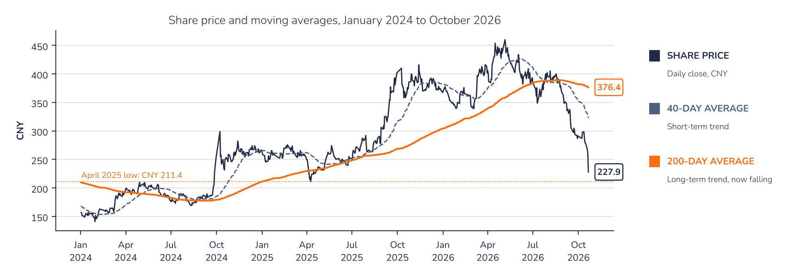
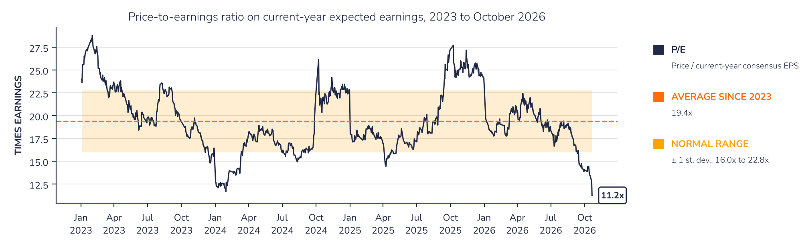
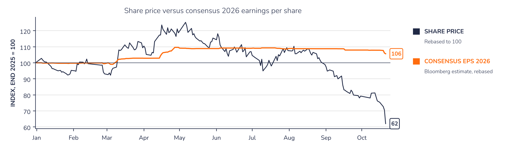

CATL: charts
300750 CHChart 1 · CATL: the share has fallen below a declining 200-day average
Daily close in CNY with 40-day and 200-day moving averages

The share fell below its 200-day average in early September and lost 12% after the results. The April 2025 low at CNY 211.4 is the level to watch on the downside; a move back above the 200-day average, now CNY 376, could signal the end of the downtrend.
Chart 2 · CATL: valuation at its lowest since the 2018 listing
Share price / consensus EPS for the current year; the ratio steps down each January as estimates roll forward

Chart 3 · CATL: share price and earnings estimates have parted ways
Share price and Bloomberg consensus EPS for 2026, both rebased to 100 at the end of 2025

Source: Syz Research, Bloomberg. Charts as of the close on 21 October 2026.